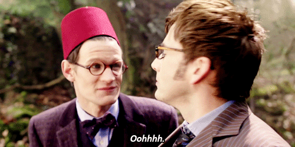

The Story of Doctor Who
Doctor Who is a series which based on a time traveller named Doctor who
is the last of the Time Lords'.He travels all the space and the time with
Tardis and his companions.He started to these travels because of his
planet burnt.Wherever he goes he saves the creatures which live there.
He always get help from his companions.He uses his sonic screwdriver to
fight to criminals.
"Doctor" is a title which Doctor uses hide his name.It's obviously not his
real name.Only few people know his real name.Also you realized he has several
faces.Reason of that when he damaged he doesn't died like humans he regenerated.
After this regeneration he has a completely different looking also actually a
little things changed in his personality.So far he regenerated 13 time.Of course
his regenerations is limited.After regenerations are over what happened?This is an
unanswered question.
